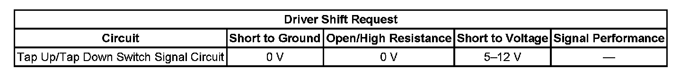

P0826
DTC P0815, P0816, or P0826
DTC Descriptors
DTC P0815
Upshift Switch Circuit
DTC P0816
Downshift Switch Circuit
DTC P0826
Up and Down Shift Switch Circuit
Diagnostic Fault Information
Perform the Diagnostic System Check - Vehicle prior to using this diagnostic procedure. Initial Inspection and Diagnostic Overview

Circuit/System Description
The driver shift control (DSC), also known as the TAP Shift, allows the driver to manually shift gears by pressing the Plus/Minus button and select the desired range of gears for your current driving conditions by using the DSC shift switch located on the automatic transmission gear shift lever. Pushing the Plus switch will command an upshift and pushing the Minus switch will command a downshift. 12 volt reference voltage flows from the ignition body control module (BCM) through the DSC switch resistor array to the BCM. The DSC shift system is activated when the gear selector is in the Manual (M) position. DSC system is deactivated in all other range positions.
Conditions for Running the DTC
The engine speed is between 500-6,500 RPM for at least 5 seconds.
DTCs P0815 or P0816
^ No DTC P0826.
^ No DTCs P1815 or P1826.
^ The time since the last gear selector range change is greater than 6 seconds.
Conditions for Setting the DTC
DTC P0815
The BCM detects an upshift request for 3 seconds in PARK, REVERSE, NEUTRAL, or D6- and for 600 seconds in PARK, REVERSE, NEUTRAL, D2, D4, OR D6.
DTC P0816
The BCM detects a downshift request for 3 seconds in PARK, REVERSE, NEUTRAL, or D6- and for 600 seconds in PARK, REVERSE, NEUTRAL, D2, D4, or D6.
DTC P0826
The BCM detects an invalid voltage on the TAP up/down signal circuit for 5 seconds.
Action Taken When the DTC Sets
^ DTCs P0815, P0816, and P0826 are Type C DTCs.
^ The BCM disables TAP shift operation.
Conditions for Clearing the DTC
DTCs P0815, P0816, and P0826 are Type C DTCs.
Reference Information
Schematic Reference
Automatic Transmission Controls Schematics
Connector End View Reference
^ Automatic Transmission Inline 16-Way Connector End View
^ Automatic Transmission Internal Connector End Views
^ Automatic Transmission Related Connector End Views
^ Data Communication Connector End Views
DTC Type Reference
^ Diagnostic Trouble Code (DTC) Type Definitions
^ Diagnostic Trouble Code (DTC) List/Type
Electrical Information Reference
^ Circuit Testing
^ Connector Repairs
^ Testing for Intermittent Conditions and Poor Connections
^ Wiring Repairs
Circuit/System Verification
DTCs P0815, P0816, or P0826
With the engine ON, engage the DSC Plus/Minus switch positions while observing the Driver Shift Request parameter in the body controls scan tool data list. The parameter should change to reflect the selected Up or Downshift switch position and with no Up or Downshift switch position selected the parameter should display None.
Circuit/System Testing
DTC P0815
1. Select the Driver Shift Request parameter.
2. Disconnect the automatic transmission DSC shift switch connector.
^ If the parameter status changes from Upshift to Invalid, replace the DSC shift switch.
^ If the parameter status does not change, replace the BCM.
DTC P0816
1. Select the Driver Shift Request parameter.
2. Disconnect the DSC shift switch connector.
^ If the parameter status changes from Downshift to Invalid, replace the DSC shift switch.
^ If the parameter status does not change, replace the BCM.
DTC P0826
1. Test the 12 volt reference circuit and the tap up and tap down switch signal circuit for a short to ground.
^ If the circuits test OK, test the 12 volt reference circuit and the tap up and tap down signal circuit for an open or short to voltage.
2. Test the DSC shift switch for correct resistance value, 8.11-8.39 ohms.
^ If the resistance is not within specifications, replace the switch assembly.
^ If the resistance is within specifications, replace the BCM.
Component Testing
Test the DSC shift switch for correct resistance value, 8.11-8.39 ohms.
If the resistance is not within specifications, replace the DSC switch.
Repair Instructions
Perform the Diagnostic Repair Verification after completing the diagnostic procedure. Verification Tests
^ Replace the DSC shift switch. Refer to Shift Lever Replacement.
^ Replace the BCM. Refer to Control Module References for replacement, setup, and programming. Programming and Relearning